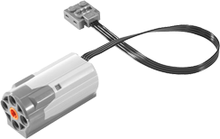

Ajuste o sentido do(s) motor(es). Este bloco não os ativa se eles já estiverem desligados.

Ligue o motor por 10 segundos ao mudar o sentido de giro a cada segundo.

Você pode selecionar o(s) motor(es) WeDo no primeiro menu suspenso:
- Se você tem apenas um motor, use a opção "motor", a qual definirá a direção do motor, independentemente de onde ele está conectado no hub WeDo.
- Se você tem dois motores que deseja controlar separadamente, pode usar o "motor de A" com um e "o motor B" com o outro.
- "todos os motores" define a direção para todos os motores conectados.
Você pode selecionar a direção a partir do segundo menu suspenso.
Para usar definir direção, você precisa de motor(es) WeDo conectado(s) ao seu computador por meio de um hub LEGO WeDo.
